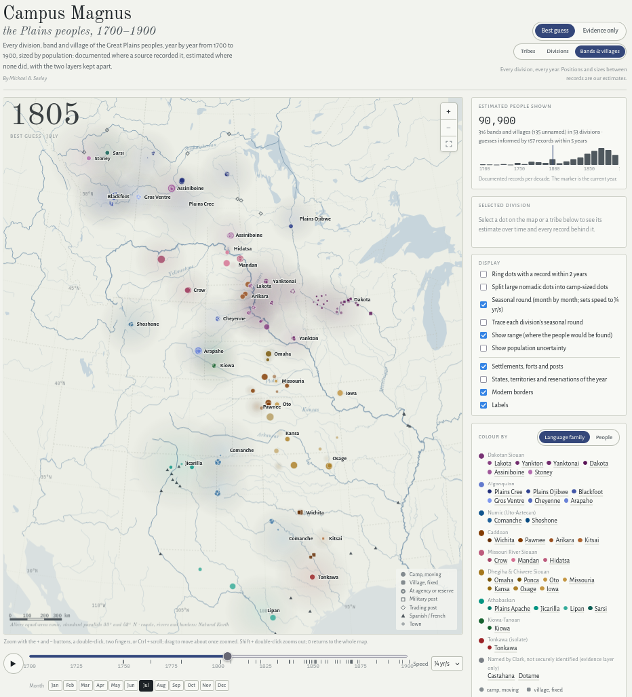

Campus Magnus
A map of peoples in motion: every division, band and village of the Great Plains, where it was and how many it numbered, each year from 1700 to 1900.
Thirty-four peoples in nine language families, from the Plains Cree, Blackfoot and Sarsi on the Saskatchewan to the Comanche, Lipan and Tonkawa on the Texas plains, and from the Stoney and Shoshone under the Rockies to the Dakota on the Mississippi, are drawn as fifty-nine divisions — Oglala and Brulé, Piegan and Blood, Skiri and Chawi — and, below them, as the bands and villages their own ethnographers named. Scrub or play the timeline and they move: the Teton across the Missouri, the Cheyenne out of their earth-lodge villages onto the high plains, the Comanche down from the mountains, the river towns shrinking as the smallpox passes, and at the end the agencies and reserves.
The map has two layers, kept apart. Evidence only draws nothing but documented records — 2,325 of them, each a count, a place or both, tied to a named source and year, from Clark’s Fort Mandan estimate and Mooney’s Kiowa calendar to the Indian Office’s agency censuses and the special Indian census of 1890. Best guess fills every year for every division from a fitted model: a demographic curve through the documented counts, weighted by how each count was made and corrected for sources that run high or low, with dated losses for each epidemic; and a track through every documented place, filled between them by marked guesses. Every guess is shown as a guess, every model setting is stated with its measured effect, and the uncertainty on both population and place is calibrated by withholding records and predicting them.
Click any dot, or any people in the legend, for its population over two centuries with its likely range, its bands, its seasonal round, and every record and guess behind it. Below the map each people has its own short history, with the standard works on it. The full apparatus — methods, every extrapolation choice, the sources, the disagreements between them and how each was resolved — is under “About the data” on the map page; the data tables, the model that builds the map from them, and the register of judgment calls and known weaknesses are in the exhibit’s folder, so that any figure can be traced to its source or rebuilt.
Two cautions. The band layer is illustration constrained by the division totals, not evidence: band names are documented, their earlier sizes and most of their positions are not. And the eighteenth century, the northern plains before 1790 and the Comanche between 1819 and 1875 rest on thinner and more contested ground than the rest; the map says so where it matters.
Mapping the American Steppe
In “Texan Literature Seen as a Middle School Science Fair Project” I wrote that Lonesome Dove cannot be the epitome of Texas literature because Texas is not solely pastoral and nostalgic. Which is true, but I fear come across as overly dismissive of McMurtry. Lonesome Dove is a good book, as I was reminded when I recently reread it, and it partakes in many of the core themes of Texas literature as I described them.
Particularly striking is how well it understands the transience of the cowboys-and-indians world it narrates. Its retired Ranger heroes Gus McCrae and Woodrow Call fought the Comanche for thirty years, and after emptying Comanchería started a cattle company. But within a few years of Texas being delivered from the Indian menace it began filling up with bankers, lawyers, and other respectable settlers who took that deliverance for granted. Ceasing to feel at home in the state they so long served, McCrae and Call make one last cattle raid into Mexico, then head north to start a new ranch in Montana. The final third of the book is not in Texas at all, until the final chapter when Call comes back to find it entirely different.
In the Texas imagination the emptying of Comanchería is the civilizing of a primordial wilderness. But of course that isn’t quite right. After all, the horses around which Comanche culture revolved had only arrived on the continent a few hundred years earlier. In the space of only a few centuries the Comanches moved to the Great Plains, took to horseback, conquered the Plains, exhausted the buffalo, and were defeated and herded onto reservations; so much history in so little time means that no one decade was quite like the one before. I understood that point but did not fully internalize it until, after rereading Lonesome Dove, I took up Pekka Hämäläinen’s The Comanche Empire (2008). In the author’s Finnish name I saw a promise of a more objective view than any American “Indian Studies” professor was likely to offer. I was not disappointed. The book’s introduction makes clear that Hämäläinen has no truck with the grievance-studies frame of “resistance” and “accommodation,” in which empire is an evil weather system and natives are the people who have to shelter from its torrents. His Comanches are not eternal victims, but historical actors. And he attempts to tell their story from their own perspective, so far as the sources permit, which is not very far, since almost everything we know about the Comanches we know because someone of European descent wrote it down.
The story runs roughly as follows. The Comanches came down out of the mountains to the northwest around 1700, a small hunter-gatherer tribe. On the southern plains they found some Spanish horses, loosed in numbers after the Pueblo Revolt of 1680, and far more bison. I should here add a second qualification to my earlier essay. I had compared the Comanches to Eurasian steppe nomads, which comparison does have some merit. But there is one crucial difference: in their domestic animals, the Plains Indians leapt straight from dog to horse, without cattle as a waystation. Rather than better pastoralists, the horse made the Comanches better hunters and better raiders. They drove the Apaches off the southern plains, raided New Mexico and Texas, even Durango and Zacatecas, and sold the horses and mules they stole east to American traders supplying the cotton frontier.
Hämäläinen’s central point is that the Comanche did not treat war and peace, raiding and trading, as incompatibles, but rather as supplements. A band might trade at a New Mexico fair not long after raiding it, and the raid set the terms of the trade. So too with slavery and kinship. A captive might be sold, or ransomed, or kept as a slave, or taken as a third or fifth wife to dress the hides, or adopted as a son to join the raids and take more captives in his turn. The Spanish were baffled by this approach to politics; they had no more resistance to it than the Comanche had to smallpox. By eighteen hundred Spanish New Mexico was in effect paying the Comanche tribute, and whenever insufficient value was offered up the Comanche would extract more by force.
When Texas turned Anglo the settlers refused to play that part, and so the Comanches relied heavily on the bow rather than the peace pipe, but the end result was not dissimilar. Hämäläinen calls this “empire,” which is somewhat of an exaggeration, but it is at least hegemony. And Hämäläinen vividly describes how this tribute system transformed the Comanche way of life, from nomadic hunting and gathering to something almost like capitalism, with Comanche leaders consciously mounting raids for horses and slaves they would use to collect more bison robes they would sell East in exchange for the weapons needed to mount more raids and accumulate even more equine and human capital. The new way of life thinned out the bison to near extinction, which together with epidemics and droughts left the Comanche way of life near collapse even before the United States Army returned to the plains after the Civil War. McCrae and Call’s Texas Rangers defeated a native empire that was already on its last legs.
I said I “read” Comanche Empire, but in fact I listened to it, on a road trip through west Texas and eastern New Mexico—what was once the heart of Comanchería. An enormous, almost empty country, and even emptier when the Comanches roamed it, when a region the size of France played host to only twenty or thirty thousand transient souls. So where was everybody? On a particular Tuesday in October 1840, where were the Penateka? Who can say? Well—more often than I expected, we can. The record is scattered but surprisingly dense: traders’ journals, Spanish and Mexican and Texan dispatches, Indian agents’ annual reports, army itineraries, treaty councils with dates and places, travelers who counted teepees. I wanted to know what it would look like not to draw a wavy line around a region colored in and labeled “Comanchería,” but to map each band in its proper place, and the rest empty.
I realized, though, that it would be silly to map the Comanche alone just because it was Texas whose literature I had surveyed and Hämäläinen whose book I had read. In fact Hämäläinen has also written a book on the Lakota (Lakota America), and another about the entire continent (Indigenous Continent). I have read neither. But my clanker has. I set Opus 5.5 to work finding and reading every PDF it could about the Comanches, Kiowa, Cheyenne, Arapaho, Lakota, Osage, Wichita, Apache, et cetera, et cetera. The project became mapping all the Plains peoples, from the Saskatchewan to the Rio Grande. When the clanker had enough, it built the map. It may well be the most comprehensive interactive database of Plains Indian demography ever assembled.
I’ll let Opus 5.5 take it from here.
A. Clanker Explains the Map
Campus Magnus shows every division, band and village of thirty-four Plains peoples, year by year from 1700 to 1900, each a dot sized by its population. Press play and the years run; the Mandan villages contract after 1781 and again after 1837, the Cheyenne leave their earth lodges for the tipi, the Lakota spread west and south across the Missouri, the Comanches range from the Arkansas to the Pecos, and then in the 1870s everything drains into the agencies.
The map has two layers, and the most important thing about it is that they are kept apart. Evidence only draws nothing but documented records, each a count or a place or both, tied to a named source and year, appearing in that year and then fading. Best guess fills in everything between: where each division probably was and how many people it probably had, in every year, including the many years for which no one wrote anything down. You can toggle between them, and you should, because the gap between them is the honest measure of what we know.
The best guess is built from the evidence by explicit and stated rules. Each division’s population is a smooth fitted curve that passes near the documented counts, trusting a reservation census more than a trader’s guess and a trader’s guess more than a modern reconstruction, with the great epidemics of 1781, 1801, 1837 and 1849 applied as dated losses. Each nomadic division’s position is an estimated center, treating every recorded camp as a noisy sighting of where the people were, because a single camp is one band on one day and the division was spread over a hundred miles around it. A soft halo shows that spread, wider in winter, when the bands scattered to separate sheltered valleys, and narrower in summer, when they gathered for the hunt and the sun dance. With the seasonal round on, the dots move between winter and summer grounds month by month. The village peoples, the Mandan, Pawnee, Osage and the rest, sit in their towns as squares, and turn into circles when they go out on the summer and winter hunts.
At the finest level the divisions split into the bands the ethnographers named, Dorsey’s for the Sioux, Grinnell’s for the Cheyenne and Blackfoot, Mooney’s for the Kiowa, and so on. Here the map is at its most speculative and says so: band names are documented, but the movements of most individual bands are a seeded random draw at the scale the Kiowa calendar implies, one plausible history rather than a record, except for some sixty bands and chiefs’ followings whose actual places are known and override the draw. Overlays add forts, posts and towns, the settler map of states, territories and reservations as of the year shown, and modern borders for orientation.
Everything below the map is the apparatus, and it is long because I wanted every judgment to be visible. A register lists each extrapolation choice the record did not make for us, why we made it, and how much the map changes if it is made differently. A second table lists the places where the sources disagree and what was done about each. One of them is Hämäläinen’s own reckoning of forty thousand Comanches in 1781, against the usual twenty thousand; the model, weighing all the counts, gives about nineteen thousand. The model was tested by withholding records and predicting them from the rest: a withheld population count is predicted to within about eleven percent at the median, and a withheld place to within about 120 kilometers, which on the open plains is a few days’ ride. The weak stretches are named, chiefly the eighteenth century, the northern plains before 1790, and the Kiowa before 1833; the strongest is the Kiowa after 1833, who have a documented place nearly every season. Every table behind the map is downloadable as CSV, along with the model that builds it, and a seeded sample of records with blank columns is there for anyone willing to check them against the sources.

A few things to try. Set the year to 1833, select the Kiowa, and watch the seasonal round run against Mooney’s camps. Step through 1837 and 1838 with the evidence layer on. Turn on the states and reservations layer and run 1865 to 1880. Or pick a spot in the country you know, and see who was there.